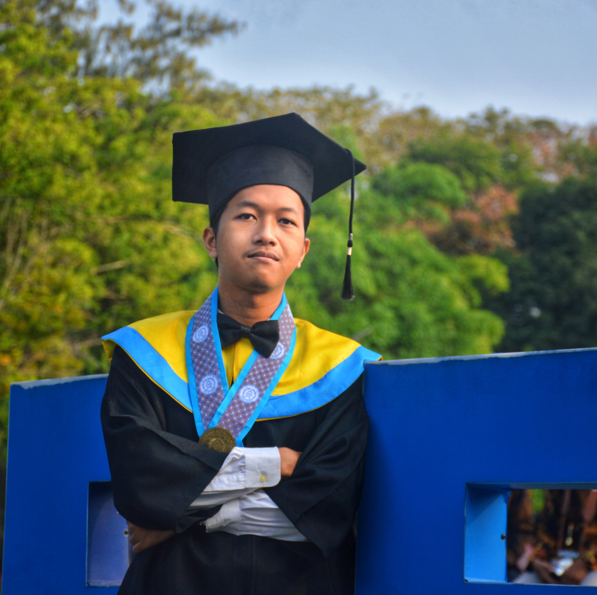

Selamat Datang!#

Perkenalkan saya Michael Raditya Krisnadhi, S.Kom., seorang INTJ yang berprofesi sebagai Software Engineer. Lahir di Purwokerto tahun 2002, saya dibesarkan dan sekolah di Surakarta / Solo, dari kecil hingga kuliah. Saya merupakan alumni dari program studi S1 Informatika Universitas Sebelas Maret (UNS) Surakarta angkatan 2020, yang lulus pada tahun 2024 lalu dengan IPK 3.92 dan masa studi 4 tahun 5 bulan. Semasa sekolah dan kuliah, saya sering terlibat dalam berbagai proyek dan aktivitas sosial, yang mana sebagian besar berhubungan secara langsung dengan pengembangan karir saya. Saya merupakan orang dengan kepribadian yang tegas serta berorientasi kepada hasil dan masa depan.
Sekarang saya bekerja sebagai Full Stack Developer di PT Sistem Integrasi Medika yang berlokasi di Tangerang Selatan dan Surakarta. PT Sistem Integrasi Medika merupakan perusahaan software yang bergerak di industri kesehatan di bawah naungan Primaya Hospital Group dan memiliki berbagai produk di antaranya Hospital Information System (HIS), Laboratory Information System (LIS), dan lain sebagainya. Perjalanan karir saya dimulai sejak masa SMA di mana saya terlibat mengerjakan berbagai proyek pengembangan aplikasi berbasis web untuk keperluan organisasi dan acara sekolah seperti e-voting, e-ticketing, Computer-Based Test (CBT), dan lain sebagainya, yang mana kala itu saya belajar pemrograman secara otodidak. Berbagai proyek besar telah sukses saya selesaikan dalam 5+ tahun kiprah saya di dunia software development, selengkapnya dapat dilihat pada bagian portfolio.
Hobi saya saat ini adalah bermain game, menonton film & series, mendengarkan musik, dan kulineran. Saya menyukai game dengan genre First-Person Shooter (FPS), strategi 4X, dan open-world. Game yang cukup sering saya mainkan antara lain Ravenfield, Master of Orion, Civilization, Minecraft, dan Stardew Valley. Lalu saya suka menonton film & series dengan genre crime, drama, dan sci-fi, dengan The Godfather merupakan film favorit saya. Selera musik saya sebagian besar bernuansa rock seperti Rush, The Beatles, dan Deep Purple, serta metal seperti Iron Maiden, Metallica, dan Dream Theater. Aktivitas kulineran saya sebagian besar berada di wilayah Solo karena cukup dikenal dengan julukan kota kuliner, mulai dari kuliner khas yang legendaris seperti selat dan sate kambing hingga western seperti pizza dan steak.
LinkedIn | GitHub | Twitter | Instagram
Riwayat Karir#
- PT Sistem Integrasi Medika (2024 s.d. sekarang) - Full Stack Developer (penempatan Surakarta) 1
- Self-employed software developer - Sibisa (2022) 2, Kancani (2022) 3, Be-Fam (2023) 4, Narajiwa (2023) 5
- Universitas Sebelas Maret (2021 s.d. 2024) - System & Software Engineer Intern ERP Informatika UNS (1 tahun) 6, Asisten Pengajar (4 matakuliah)
- Digitalize (2022) - Software Engineer (kontrak) 7
- Genba Coffee (2022) - Web Developer (kontrak) 8
Riwayat Pendidikan#
- Universitas Sebelas Maret (2020) - S1 Informatika, Fakultas Teknologi Informasi dan Sains Data (FATISDA)
- SMA Negeri 3 Surakarta (2017) - Matematika & Ilmu Pengetahuan Alam (MIPA)
- SMP Negeri 4 Surakarta (2014)
Riwayat Organisasi & Aktivitas Sosial#
- Komisi Pemilihan Raya (KPR) FMIPA UNS (2021) - Koordinator Divisi Operasional dan Publikasi 9
- Pekan Informasi dan Teknologi (PINGFEST) Informatika UNS (2021) - Koordinator Divisi Teknologi 10 11
- International Game Development Competition Informatika UNS (2021) - Staf Divisi Acara
- Himpunan Mahasiswa Ilmu Komputer / Informatika (HIMASTER) UNS (2021) - Wakil Ketua Bidang Pengembangan Teknologi
- IT4You Workshop Informatika UNS (2020) - Ketua Pelaksana & Pembicara
- OSN Informatika SMAN 3 Surakarta (2020) - Tutor dan pembimbing olimpiade
- Ajang Kreasi dan Seni (AKSEN) SMAN 3 Surakarta (2019) - Staf Divisi Ticketing 12
- Administrator SMAN 3 Surakarta (2017) - Anggota, tutor, developer, dan technical lead divisi programming 13 14 15 16
Riwayat Sertifikasi#
- Backend Engineer (2022) - Startup Campus
Riwayat Prestasi#
- Most Valuable Person (2023) - Proyek ERP Informatika UNS
- Hi-Movers Scholarship (2022) - PT Bank Negara Indonesia
- Top 500 Proposal (2022) - Pekan Ilmiah Mahasiswa (PIM) UNS
- Crew of The Year (2021) - Himpunan Mahasiswa Ilmu Komputer / Informatika UNS
- Finalis IT-Venture (2018, 2019) - SMAN 3 Surakarta
- Peserta OSN Komputer Tingkat Kabupaten / Kota (2018, 2019) - SMAN 3 Surakarta
Keahlian#
- Backend: PHP (Laravel, CodeIgniter, Yii), Golang, Java (Spring Boot)
- Frontend: JavaScript (ES5/ES6), TypeScript, ReactJS (ChakraUI, MaterialUI), NextJS, VueJS, AlpineJS, jQuery, Bootstrap
- Infrastructure: Linux (Ubuntu, RHEL), Bash, Docker, Networking, cPanel
- Lain-lain: Python (General Purpose), Flutter (Mobile App Development), C/C++ (Desktop & Embedded App Development), C# (Desktop App & Game Development), Lua (Game Scripting)
- Softskill: Critical Thinking, Communication, Negotiation, Teamwork, Leadership
-
PT Sistem Integrasi Medika: Hospital Information System (HISv3) ↩
-
Universitas Sebelas Maret: ERP Sekolah ↩
-
Digitalize: Perwabkeu Polda DIY ↩
-
Genba Coffee: Genba Market ↩
-
Komisi Pemilihan Raya (KPR) FMIPA UNS: Pemilihan Raya ↩
-
Pekan Informasi dan Teknologi (PINGFEST) Informatika UNS: PINGFEST E-ticketing ↩
-
Pekan Informasi dan Teknologi (PINGFEST) Informatika UNS: PINGFEST CBT / LMS (ZLearn LMS) ↩
-
Ajang Kreasi dan Seni (AKSEN) SMAN 3 Surakarta: Ajang Kreasi dan Seni (AKSEN) ↩
-
Administrator SMAN 3 Surakarta: Guru Favorit SMAN 3 Surakarta ↩
-
Administrator SMAN 3 Surakarta: E-voting Pemilos SMAN 3 Surakarta ↩
-
Administrator SMAN 3 Surakarta: E-voting Pemilos SMAN 3 Surakarta ↩
-
Administrator SMAN 3 Surakarta: Tank vs. Monsters Reloaded ↩